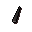
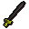
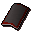
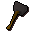
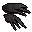
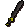
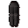
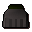
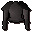

Iron bar
| Config name | iron_bar |
| Item id | 2351 |
| Value | 28 gp |
| Weight | 4lb |
| Members | No |
| Tradeable | Yes |
| Stackable | No |
| Defined in | scripts/skill_smithing/configs/smelting/smelting.obj |
Iron bar
It's a bar of iron.
Show 1 ground spawn on the world map → Open in knowledge graph →
How to make
| Skill | Level | XP | Ingredients | Tool | How | Where | Makes |
|---|---|---|---|---|---|---|---|
| Smithing | 15 | 12.5 | interface | furnace | 1 smelting |
Used to make
| Skill | Level | XP | Ingredients | Tool | How | Where | Makes |
|---|---|---|---|---|---|---|---|
| Smithing | 15 | 25.0 | interface | anvil | |||
| Smithing | 16 | 25.0 | interface | anvil | |||
| Smithing | 17 | 25.0 | interface | anvil | |||
| Smithing | 18 | 25.0 | interface | anvil | |||
| Smithing | 19 | 25.0 | interface | anvil |  Iron dart tip ×10 | ||
| Smithing | 19 | 25.0 | interface | anvil | |||
| Smithing | 20 | 25.0 | interface | anvil | |||
| Smithing | 20 | 50.0 | interface | anvil | |||
| Smithing | 21 | 50.0 | interface | anvil |  Iron longsword | ||
| Smithing | 22 | 50.0 | interface | anvil | |||
| Smithing | 22 | 25.0 | interface | anvil | |||
| Smithing | 23 | 50.0 | interface | anvil |  Iron sq shield | ||
| Smithing | 24 | 75.0 | interface | anvil |  Iron warhammer | ||
| Smithing | 25 | 75.0 | interface | anvil | |||
| Smithing | 26 | 75.0 | interface | anvil | |||
| Smithing | 27 | 75.0 | interface | anvil | |||
| Smithing | 28 | 50.0 | interface | anvil |  Iron claws | ||
| Smithing | 29 | 75.0 | interface | anvil |  Iron 2h sword | ||
| Smithing | 31 | 75.0 | interface | anvil |  Iron platelegs | ||
| Smithing | 31 | 75.0 | interface | anvil |  Iron plateskirt | ||
| Smithing | 33 | 125.0 | interface | anvil |  Iron platebody |
Dropped by
| NPC | Level | Quantity | Rarity | Via | Notes |
|---|---|---|---|---|---|
| 62 | 1 | 9/128 (7.03%) | |||
| 62 | 1 | 9/128 (7.03%) | |||
| 62 | 1 | 9/128 (7.03%) | |||
| 62 | 1 | 9/128 (7.03%) | |||
| 36 | 2 | 3/64 (4.69%) | |||
| 10 | 1 | 3/128 (2.34%) | |||
| 20 | 1 | 3/128 (2.34%) | |||
| 9 | 1 | 3/128 (2.34%) | |||
| 10 | 1 | 3/128 (2.34%) | |||
| 14 | 1 | 3/128 (2.34%) | if npc_type = macro_golemguardian_6 if npc_type = macro_golemguardian_5 | ||
| 29 | 1 | 3/128 (2.34%) | if npc_type = macro_golemguardian_6 if npc_type = macro_golemguardian_5 | ||
| 49 | 1 | 3/128 (2.34%) | if npc_type = macro_golemguardian_6 if npc_type = macro_golemguardian_5 | ||
| 79 | 1 | 3/128 (2.34%) | if npc_type = macro_golemguardian_6 if npc_type = macro_golemguardian_5 | ||
| 120 | 1 | 3/128 (2.34%) | if npc_type = macro_golemguardian_6 if npc_type = macro_golemguardian_5 | ||
| 159 | 1 | 3/128 (2.34%) | if npc_type = macro_golemguardian_6 if npc_type = macro_golemguardian_5 | ||
| 36 | 1 | 1/64 (1.56%) | |||
| 23 | 1 | 1/128 (0.78%) | |||
| 23 | 1 | 1/128 (0.78%) | |||
| 26 | 1 | 1/128 (0.78%) | |||
| 23 | 1 | 1/128 (0.78%) |
Sold at
| Shop | Shopkeeper | Stock |
|---|---|---|
| Drogo's Mining Emporium. | 0 |
Ground spawns
| Area | Coordinates | Level | Count | Map |
|---|---|---|---|---|
| Graveyard of Shadows | 3111, 3657 | 0 | 1 | view |
Quests
Death Plateau The Knight's Sword
Referenced in scripts
scripts/_test/scripts/cheats/cheat_bank.rs2scripts/drop tables/scripts/dwarf.rs2scripts/drop tables/scripts/paladin.rs2scripts/drop tables/scripts/pirate.rs2scripts/drop tables/scripts/thug.rs2scripts/drop tables/scripts/white_knight.rs2scripts/macro events/scripts/mining/macro_event_rock_golem.rs2scripts/quests/quest_death/scripts/death_smithy.rs2scripts/quests/quest_squire/scripts/quest_squire.rs2scripts/skill_smithing/scripts/smelting/smelting.rs2scripts/skill_smithing/scripts/smithing/smithing.rs2